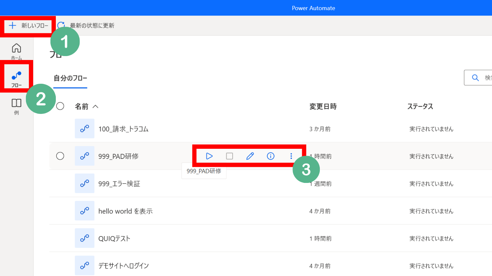
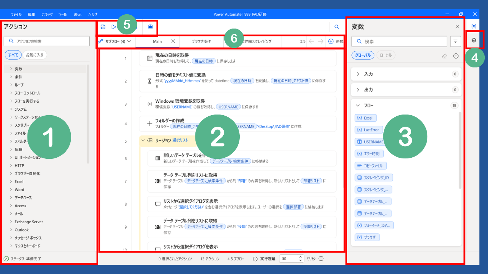
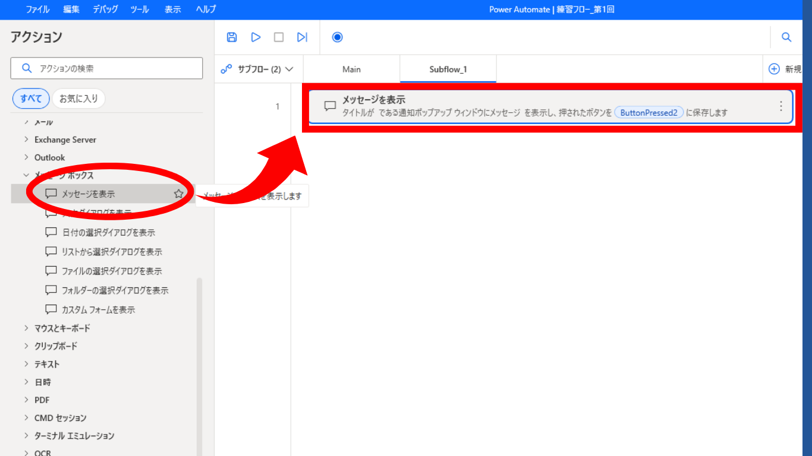
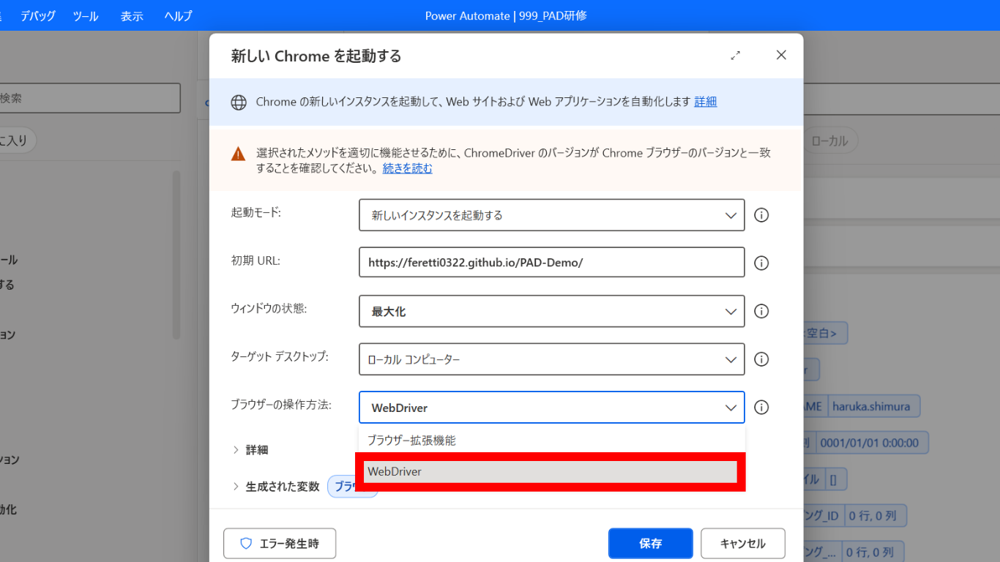
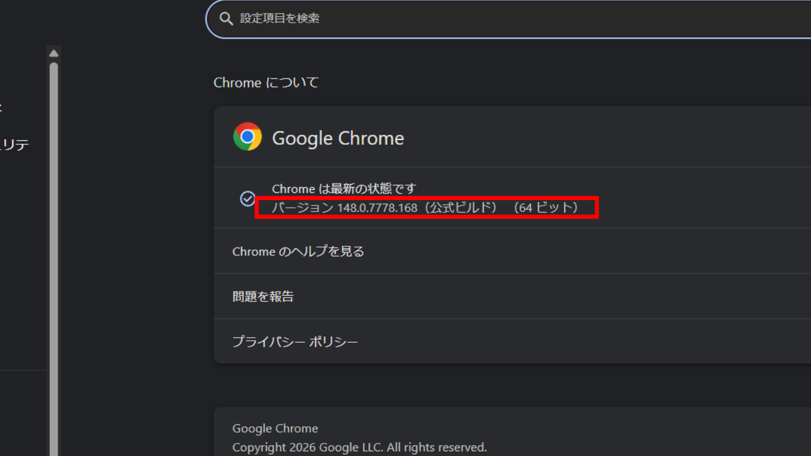
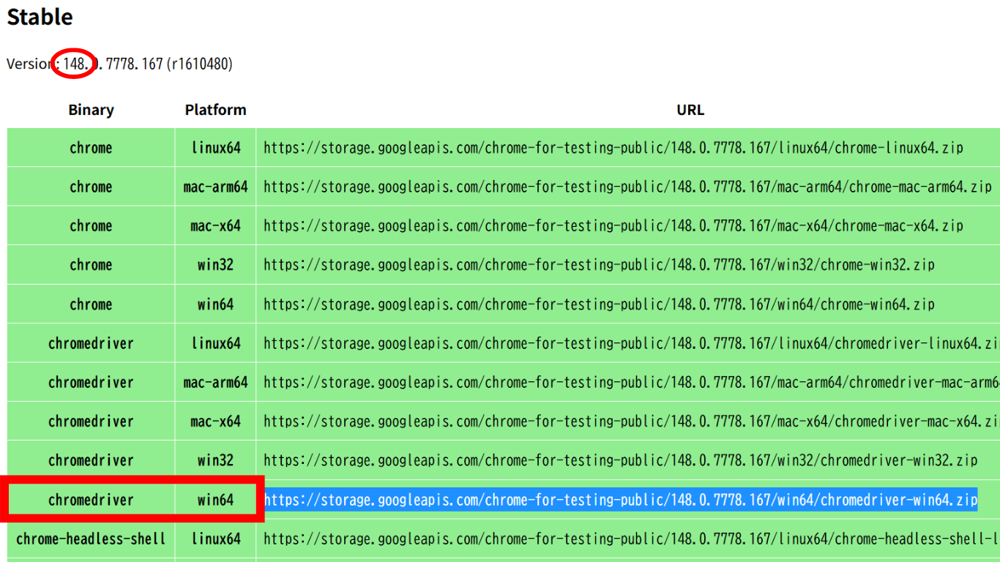
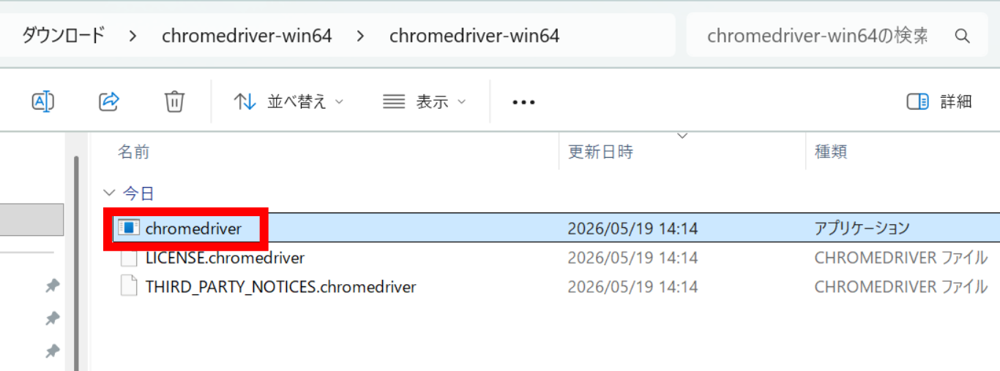
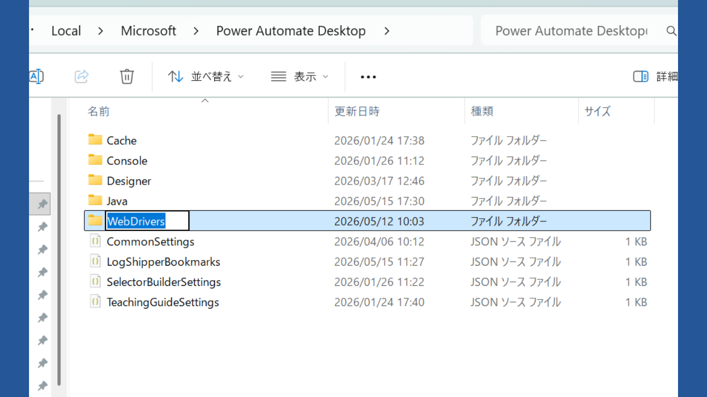
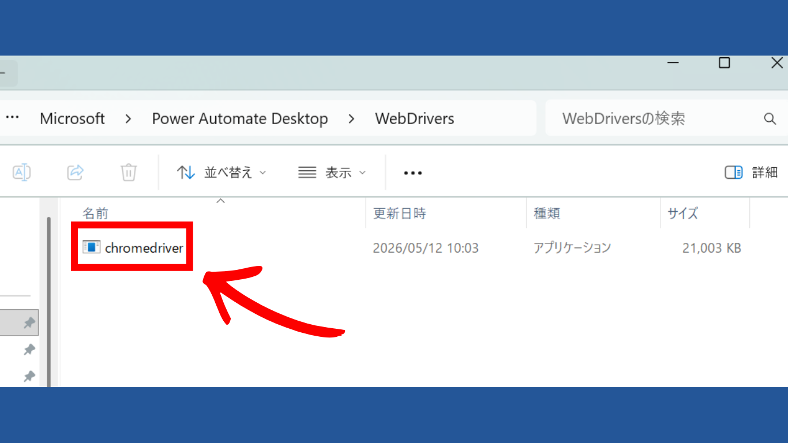

第1回 環境セットアップ 〜PAD 画面の把握と Chrome WebDriver の導入〜
第0回でインストール済みの PAD を実際に開き、各画面の役割を把握します。
あわせて Chrome WebDriver を導入し、業務サイトでも安定動作する自動化フローの土台を完成させます。
事前準備
下記が完了していることを確認してください：
- 第0回 キックオフ で PAD のインストール＋Microsoft 職場アカウントでのサインインが完了済み
- Chrome ブラウザがインストールされている
PAD の画面構成を知る
PAD を起動すると2つの主要画面が登場します。それぞれの役割と使うタイミングを把握しておくと、以降の研修中に「どの画面で何をしているか」が分からなくなることを防げます。
1-A. コンソール画面 〜マイフロー一覧〜
PAD を起動して最初に開く画面が 「コンソール」です。ここでは自分が作成したフローが一覧表示され、新規作成・実行・編集・削除・名前変更などができます。

①新しいフローボタン
左上にある「+ 新しいフロー」ボタン。クリックするとフロー名の入力ダイアログが出て、フローデザイナーが新しいタブで開く。
②マイフロー一覧
自分が作成したフローの一覧。フロー名・更新日時・状態（実行中／停止中）が表示される。行をダブルクリックでフローデザイナーが開く。
③実行 / 停止 / 編集ボタン
各フロー行にカーソルを合わせると表示される。▶ 実行はフローを動かす、⏹ 停止は実行中のフローを止める、✏️ 編集でフローデザイナーが開く。
1-B. フローデザイナー画面 〜フロー編集画面〜
コンソールから新規作成または既存フローを開くと、フローデザイナー（編集画面）が新しいウィンドウで開きます。実際の作業時間の 9 割以上はこの画面を使います。

①アクションペイン（左）
使えるアクションのカタログ。「Excel」「ブラウザー自動化」「変数」などのカテゴリ別に整理されている。検索バーでアクション名を絞り込める。ここからドラッグ＆ドロップで真ん中のワークスペースに配置する。
②ワークスペース（中央）
フローの本体。配置したアクションが上から下に順番に並ぶ。ここがフローの「シナリオ」になる。アクションをダブルクリックすると設定画面が開く。
③変数ペイン（右）
フロー内で使う変数の一覧。入力変数（フロー開始時にもらう値）・フロー変数（フロー内で生成される値）・出力変数（フロー終了時に返す値）が分かれて表示される。第2回（変数を完全理解）で本格的に使う。
④UI 要素ペイン（右タブ切替）
ブラウザや業務アプリの「ボタン」「入力欄」など、自動化対象の UI 要素を登録しておく場所。第4回（ブラウザ自動化①）以降で頻繁に使う。
⑤ツールバー（上部）
▶ 実行 / ⏸ 一時停止 / ⏹ 停止 / 💾 保存 / ↶ 元に戻す などのボタン。ショートカット：Ctrl+S（保存）、F5（実行）、Shift+F5（停止）。
⑥サブフロータブ（中央上部）
1つのフローを Main / サブフロー1 / サブフロー2 ... と複数のタブに分割できる仕組み。第6回・第7回で4分割パターン（Main＋ブラウザ操作＋スタッフ詳細スクレイピング＋エラー）を学ぶ。
▶ アクションの追加方法
フローにアクションを追加するときは、左側の「アクションペイン」から目的のアクションを探し、真ん中の「ワークスペース」へドラッグ＆ドロップします。アクション名が分かっているときは、アクションペイン上部の検索バーで絞り込むのが速いです。

ドロップするとアクションの設定ダイアログが自動で開くので、必要な値（表示するメッセージなど）を入力して 「保存」 を押すとワークスペースに配置されます。
練習フロー_第1回という名前で新規作成し、フローデザイナーが開いたら4つのペインの位置を指差し確認してから保存（Ctrl+S）してみましょう。
練習フロー_第1回に「メッセージを表示する」アクションを追加し、「こんにちは」と表示してみましょう。実行（F5）して、画面にメッセージダイアログが出れば成功です。
C. Chrome WebDriver の導入
WebDriver の選び方からインストール 5 ステップ、バージョン管理までC-1. ChromeDriver vs 標準起動 〜どちらを使うべき？〜
PAD には Chrome を起動する方法が2種類あります。本研修では Chrome WebDriver起動 を必修として使います。その理由をここで理解しましょう。
| 項目 | ブラウザー拡張機能 | Chrome WebDriver起動 |
|---|---|---|
| PADのアクション名 | 新しい Chrome を起動する | 新しい Chrome を起動する |
| 仕組み | すでに起動している Chrome に「割り込む」 | PAD が Chrome を子プロセスとして完全制御 |
| セットアップ | 不要 | ChromeDriver の配置が必要 |
| 業務サイトでの安定性 | ⚠️ サイトによって要素が取れないことがある | ✅ 業務サイトでも安定して動作しやすい |
| 本研修での推奨 | △ 学習初期のみ | ◎ 必須（第4回以降） |

C-2. ChromeDriver のインストール手順（5ステップ）
-

Chrome のバージョンを確認する Chrome を開き、アドレスバーにchrome://settings/helpと入力する。
バージョン番号（例:138.0.7204.169）をメモする。 -

対応する ChromeDriver をダウンロードする 公式 Chrome for Testing ページ（ https://googlechromelabs.github.io/chrome-for-testing/ ）にアクセスする。
Chrome ブラウザのバージョンと一致するバージョンを選択（通常、最初の3つの数字が一致していれば OK）。
win-x64アーキテクチャ用の ZIP をダウンロード。 -

ダウンロードした ZIP ファイルを解凍する ZIP ファイル（例：chromedriver-win64.zip）を右クリック →「すべて展開」を選択。展開先は既定のままで OK。chromedriver-win64\chromedriver.exeができる。 -

Power Automate Desktop 用のフォルダを作成する エクスプローラーを開き、アドレスバーに以下を貼り付けて Enter：フォルダー内で右クリック →「新規作成」→「フォルダー」を選択。%LOCALAPPDATA%\Microsoft\Power Automate Desktop
フォルダー名をWebDriversにする（大文字・小文字を正確に）。 -

chromedriver.exe を配置する 手順3で解凍したフォルダからchromedriver.exeをコピー → 手順4で作成したWebDriversフォルダに貼り付ける。
最終的なフォルダー構成：AppData └ Local └ Microsoft └ Power Automate Desktop └ WebDrivers └ chromedriver.exe
練習フローに「新しい Chrome を起動する」アクションを追加し、URL に デモサイトトップ を指定。「操作方法 = Webdriver」 で実行し、Chrome が自動で開いてデモサイトが表示されれば完了です。
C-3. バージョン不一致に注意
月に1回、Chrome のバージョンを確認して ChromeDriver を更新する運用を推奨します。
典型的な症状：「ChromeDriver と Chrome のバージョンが一致しません」というエラーメッセージ。
解答例 / 完成フローテキスト
本回のハンズオン課題の完成フローテキストをダウンロードして、PAD 編集画面に貼り付けてください。
⬇️ lesson-1.txt をダウンロードよくある詰まりと FAQ
chrome://settings/help で Chrome の最新バージョン番号を再確認し、最初の3桁（例: 138.0.7204）が一致する ChromeDriver を再ダウンロードして上書き配置してください。WebDrivers、大文字小文字を含めて正確に）。配置先パスが %LOCALAPPDATA%\Microsoft\Power Automate Desktop\WebDrivers\ であることを再確認。